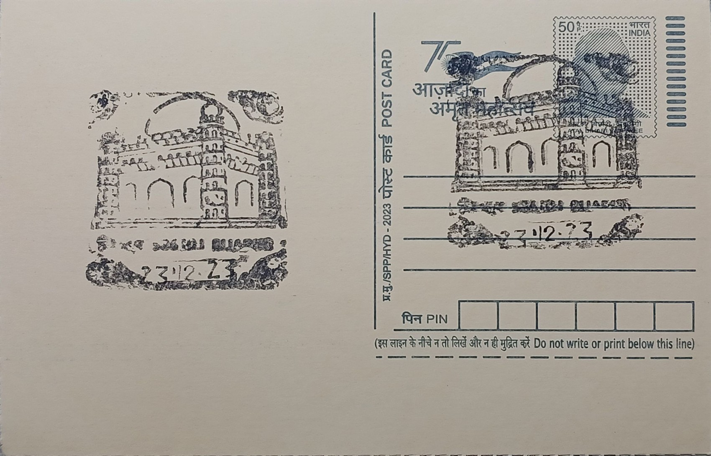

Gol Gumbaz
ಗೋಳ ಗುಮ್ಮಟ


The name Gol Gumbaz derives from the Kannada-Urdu rendering of the Persian "Gol Gumbad," meaning "circular dome," a straightforward descriptive title that eclipsed the monument's formal identity as the mausoleum of Mohammed Adil Shah. It stands in Vijayapura, historically known as Bijapur, a city that served as the capital of the Adil Shahi sultanate from the early sixteenth century until its absorption into the Mughal empire in 1686. The structure was commissioned by the sultan himself as his final resting place, a practice common among Deccan rulers who often began constructing their tombs well before death, treating the building as both a spiritual preparation and a public statement of dynastic permanence.
As a funerary monument, Gol Gumbaz belongs to the broader tradition of Islamic royal mausolea that flourished across the Deccan sultanates, but it is distinguished by holding one of the largest masonry domes constructed before the modern era, generally cited as the second largest by interior span after the Pantheon in Rome, with external diameter figures recorded around 44 metres. Its significance extends beyond scale: the tomb chamber contains not only the grave of Mohammed Adil Shah but also those of his wives, a daughter, and a grandson, reflecting its role as a dynastic rather than purely personal memorial. Today it is designated a centrally protected monument under the Archaeological Survey of India, placing it among the country's formally safeguarded heritage structures.
Construction began around 1626, the year Mohammed Adil Shah ascended the throne, and continued through his reign until his death in 1656, with the building reportedly still unfinished in certain decorative respects at that time. The design is attributed to the architect Yaqut of Dabul, a craftsman from the Konkan coast whose work fused Persian and Ottoman structural ideas with Deccani masonry traditions. The mausoleum takes the form of a massive cube roughly 47.5 metres to a side, surmounted by the dome, which is supported not by internal pillars but by a system of eight intersecting arches formed from two superimposed, rotated squares, creating interlocking pendentives that transfer the dome's immense load outward to the corner walls and towers, a solution that allowed the vast uninterrupted interior space below.
The monument's best-known feature remains the whispering gallery that encircles the dome's interior base, reached by narrow spiral staircases inside each of the four seven-storeyed corner towers. A sound made at one point on the gallery's curved wall travels along its surface for the full circumference, close to 38 metres across, and returns to a listener on the opposite side as a series of distinct echoes, a phenomenon documented in acoustical studies, including analysis by physicist N. R. Tawada on the mausoleum's sound behaviour. This acoustic chamber, combined with the view it affords over the surrounding plain from the gallery's open arcades, has made the upper level as much a destination for visitors as the tomb chamber below.
In recent years the structure has required sustained conservation attention, with reports of cracking in the dome, corner minarets, and parapet walls allowing rainwater seepage, prompting periodic repair and monitoring work carried out by the Archaeological Survey of India under its centrally protected monuments programme. The surrounding complex also includes a mosque and a ruined Naqqar Khana, or ceremonial gateway, which together with the mausoleum form part of a protected archaeological zone administered alongside other Adil Shahi-era monuments in the city. The Archaeological Survey of India's Dharwad circle continues to oversee the site's upkeep and public access, maintaining Gol Gumbaz as a functioning tourist destination and a reference point for scholars studying Deccan Sultanate engineering.
| Date of Introduction | September 28, 1987 |
|---|---|
| Address | Senior Postmaster, |
| Vijayapura HO, | |
| Vijayapura (dt.), Karnataka - 586101. |